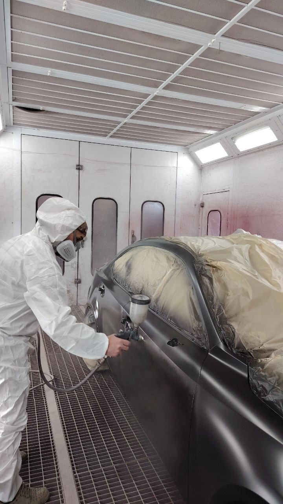

Lakierowanie elementów
Lakierujemy pojedyncze elementy karoserii, takie jak drzwi, maski, zderzaki, błotniki, progi i inne części nadwozia. Dbamy o dokładne przygotowanie powierzchni oraz estetyczny efekt końcowy.

AGET AUTO SERWIS
Zakres prac
W AGET AUTO SERWIS wykonujemy naprawy blacharskie, lakierowanie elementów, usuwanie rdzy, polerowanie lakieru oraz przygotowanie samochodów po kolizjach. Każde auto oceniamy indywidualnie, dlatego cena zależy od zakresu pracy i stanu pojazdu.
Lakierujemy pojedyncze elementy karoserii, takie jak drzwi, maski, zderzaki, błotniki, progi i inne części nadwozia. Dbamy o dokładne przygotowanie powierzchni oraz estetyczny efekt końcowy.
Naprawiamy uszkodzone elementy karoserii po stłuczkach, uderzeniach i drobnych kolizjach. Prace obejmują przygotowanie, prostowanie i dopasowanie elementów.
Zajmujemy się naprawą samochodów po szkodach komunikacyjnych. Pomagamy przywrócić pojazdowi estetyczny wygląd i przygotować go do dalszego użytkowania.
Usuwamy ogniska korozji, oczyszczamy powierzchnię i przygotowujemy elementy do dalszej naprawy lub lakierowania. To ważny etap, aby efekt był trwały i estetyczny.
Polerowanie pozwala odświeżyć wygląd samochodu, poprawić połysk lakieru i usunąć drobne ślady eksploatacji. To dobra opcja przed sprzedażą auta lub po zakończonej naprawie.
Naprawiamy, przygotowujemy i lakierujemy zderzaki samochodowe. Zajmujemy się zarówno drobnymi uszkodzeniami, jak i większymi pracami po kolizjach.
Przywracamy estetyczny wygląd starszym lub uszkodzonym samochodom. Prace mogą obejmować naprawy blacharskie, usuwanie rdzy, lakierowanie i polerowanie.
Poprawiamy wygląd samochodu przed sprzedażą poprzez polerowanie, drobne poprawki lakiernicze i estetyczne odświeżenie karoserii.
Wstępna wycena
Wyślij zdjęcia auta na WhatsApp. Wstępnie ocenimy uszkodzenia i powiemy, jakie prace mogą być potrzebne.